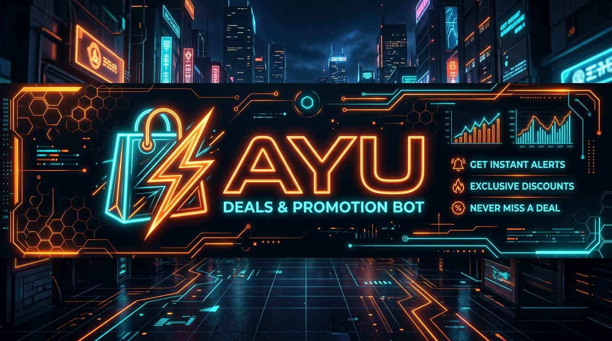

IA Vetorial Local (CPU)
● Em Produção
Motor de Ofertas & Radar
AYU — Promotions & Deals Engine
Motor autônomo de promoções (Shopee Afiliados) e radar inteligente com busca inline instantânea (<1s) no Telegram, eliminação de falsos-positivos e painel com telemetria em tempo real.
Construído sob Arquitetura Hexagonal, conta com IA vetorial local (FastEmbed ONNX 384d na CPU), copywriting persuasivo com Mistral AI, segmentação por público/gênero e sistema de alertas de wishlist no privado via Redis e PostgreSQL.
FastAPI
Telethon
FastEmbed ONNX
Redis (Vetores/Fila)
PostgreSQL
Mistral AI
Docker